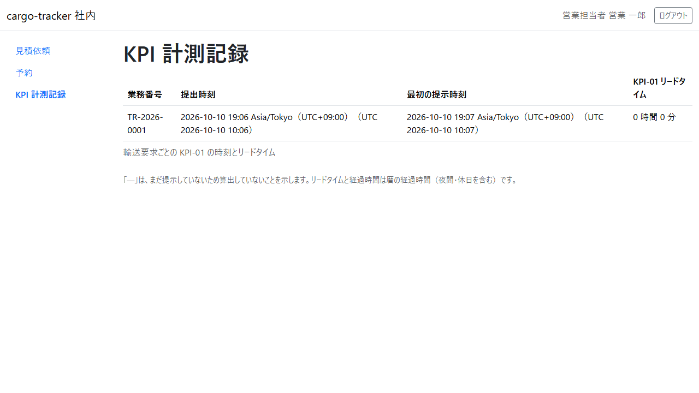

10 章 KPI 計測記録
パイロットの効果を測る KPI-01（経路提示リードタイム: 見積依頼の提出から最初の見積りの提示まで）の時刻を、見積依頼ごとに確かめる画面です。本章は WF-1 の工程 1・2（提出と提示）で記録された時刻を確かめるためのものです。
画面の開き方: ナビゲーションの「KPI 計測記録」（URL: /staff/kpi-observations）。
| 画面 | 役割 | 節 |
|---|---|---|
| KPI 計測記録 | 見積依頼ごとの提出時刻・最初の提示時刻・KPI-01 リードタイムを確かめる | 10.1 |
10.1 KPI 計測記録
この画面でできること
- 見積依頼ごとに、提出時刻・最初の提示時刻・KPI-01 リードタイムを確かめます
画面の開き方
- ナビゲーションの「KPI 計測記録」（URL:
/staff/kpi-observations）
画面の説明

| # | 項目 | 説明 |
|---|---|---|
| ① | 業務番号 | 見積依頼の番号 |
| ② | 提出時刻 | 荷主が版 1 を最初に提出した日時 |
| ③ | 最初の提示時刻 | 営業担当者が最初に見積りを提示した日時 |
| ④ | KPI-01 リードタイム | 提出時刻から最初の提示時刻までの時間 |
操作手順
- 見積依頼ごとの時刻とリードタイムを確かめます
注意・補足
- まだ見積りを提示していない見積依頼は「—」と示され、リードタイムは算出しません
- リードタイムは暦の経過時間（夜間・休日を含む）です
- この画面は、監査担当者が使う KPI の照会の画面（後のリリースで作ります）の前身の仮の画面です。Release 0.1 では営業担当者が開けます